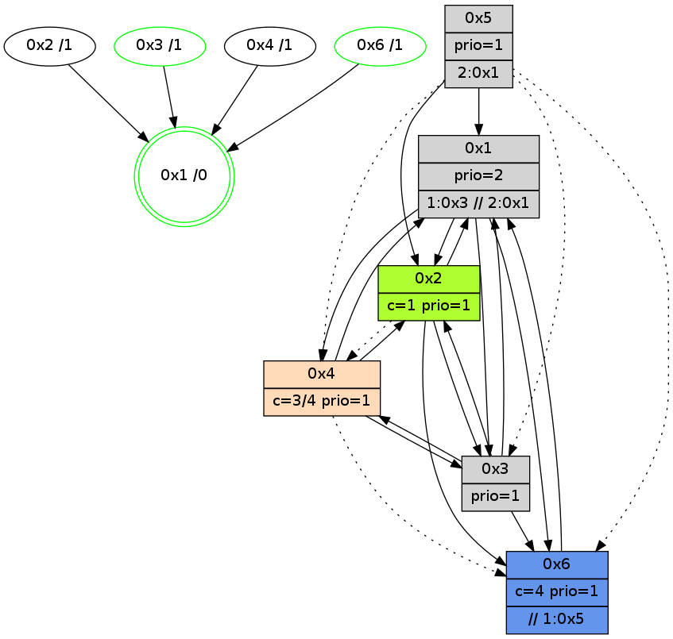

>> << IDX [start] -100 -25 -5 +0 +5 +25 +100 [880.039043188]
 Previous packets
----------------------------------------------------------------------
875.117962 beacon01(adaf) #0 coord=01,02,05,03,04,06 cycle=432.0ms assoc
-- color-indic=1 64 30 6f
875.127924 beacon02(adaf) #0 coord=01,02,05,03,04,06 cycle=432.0ms assoc 64 61 90
875.137922 beacon05(adaf) #0 coord=01,02,05,03,04,06 cycle=432.0ms assoc 64 c7 ba
875.147923 beacon03(adaf) #0 coord=01,02,05,03,04,06 cycle=432.0ms assoc 64 5b 9e
875.157923 beacon04(adaf) #0 coord=01,02,05,03,04,06 cycle=432.0ms assoc 64 fd b4
875.167923 beacon06(adaf) #0 coord=01,02,05,03,04,06 cycle=432.0ms assoc 64 89 a8
875.179095 [Hello(1): seq=579 sym=2,4,3,6 sysInfo=hasWarning,coloring-mode-on,ColoringModeRequestCalled stat=2:5,4,2,0/4:0,0,0,0/3:0,1,0,0/6:9,6,2,2]
875.182250 [STC(1) #0.96 new-neigh,tree-change,inconsistent-stability,stable,to-color d=0]
875.184978 [Hello(4): seq=680 sym=1,6,3 sysInfo=hasWarning stat=1:6,6,15,0/6:10,14,3,0/3:1,13,1,4]
875.188678 [Hello(2): seq=1168 sym=6,1,3 asym=4 sysInfo=hasWarning stat=6:0,8,3,4/1:11,4,8,0/3:15,4,3,1/4:0,0,0,0]
----------------------------------------------------------------------
875.610069 beacon01(adaf) #0 coord=01,02,05,03,04,06 cycle=432.0ms assoc
-- color-indic=1 64 f4 00
875.620030 beacon02(adaf) #0 coord=01,02,05,03,04,06 cycle=432.0ms assoc 64 a5 ff
875.630031 beacon05(adaf) #0 coord=01,02,05,03,04,06 cycle=432.0ms assoc 64 03 d5
875.640030 beacon03(adaf) #0 coord=01,02,05,03,04,06 cycle=432.0ms assoc 64 9f f1
875.650031 beacon04(adaf) #0 coord=01,02,05,03,04,06 cycle=432.0ms assoc 64 39 db
875.660031 beacon06(adaf) #0 coord=01,02,05,03,04,06 cycle=432.0ms assoc 64 4d c7
875.672586 [Color(6) seq=106 @0:0 color=4 prio=1 >>1.@5 c=0,1,2,5,6;3]
875.677397 [STC(3)->1 #0.96 new-neigh,tree-change,inconsistent-stability,stable,to-color d=1]
875.680647 [Color(3) seq=64 @0:0 prio=1 c=4;0,1,2,5,6]
----------------------------------------------------------------------
876.102177 beacon01(adaf) #0 coord=01,02,05,03,04,06 cycle=432.0ms assoc
-- color-indic=1 64 8c ad
876.112137 beacon02(adaf) #0 coord=01,02,05,03,04,06 cycle=432.0ms assoc 64 dd 52
876.122139 beacon05(adaf) #0 coord=01,02,05,03,04,06 cycle=432.0ms assoc 64 7b 78
876.132138 beacon03(adaf) #0 coord=01,02,05,03,04,06 cycle=432.0ms assoc 64 e7 5c
876.142140 beacon04(adaf) #0 coord=01,02,05,03,04,06 cycle=432.0ms assoc 64 41 76
876.152140 beacon06(adaf) #0 coord=01,02,05,03,04,06 cycle=432.0ms assoc 64 35 6a
876.163849 [Hello(4): seq=681 sym=2,1,6,3 sysInfo=hasWarning stat=2:0,0,0,0/1:6,6,15,0/6:10,14,3,0/3:2,14,2,4]
876.167303 [Hello(1): seq=580 sym=2,4,3,6 sysInfo=hasWarning,coloring-mode-on,ColoringModeRequestCalled stat=2:6,4,2,0/4:0,0,0,0/3:0,2,1,0/6:9,6,2,2]
----------------------------------------------------------------------
876.594284 beacon01(adaf) #0 coord=01,02,05,03,04,06 cycle=432.0ms assoc
-- color-indic=1 64 48 c2
876.604245 beacon02(adaf) #0 coord=01,02,05,03,04,06 cycle=432.0ms assoc 64 19 3d
876.614245 beacon05(adaf) #0 coord=01,02,05,03,04,06 cycle=432.0ms assoc 64 bf 17
876.624245 beacon03(adaf) #0 coord=01,02,05,03,04,06 cycle=432.0ms assoc 64 23 33
876.634245 beacon04(adaf) #0 coord=01,02,05,03,04,06 cycle=432.0ms assoc 64 85 19
876.644247 beacon06(adaf) #0 coord=01,02,05,03,04,06 cycle=432.0ms assoc 64 f1 05
876.656785 [Color(6) seq=107 @0:0 color=4 prio=1 >>1.@5 c=0,1,2,5,6;3]
876.658501 [Hello(3): seq=679 sym=6,4,1,2 sysInfo=hasWarning stat=6:0,10,2,0/4:6,0,2,0/1:9,11,10,1/2:11,10,3,0]
876.661265 [Color(1) seq=107 @0:0 prio=2 >1.@3,1.@5 >>2.@1 c=1,4,6;0,2,3,5]
876.663368 [Color(3) seq=65 @0:0 prio=1 c=4;0,1,2,5,6]
----------------------------------------------------------------------
877.086394 beacon01(adaf) #0 coord=01,02,05,03,04,06 cycle=432.0ms assoc
-- color-indic=1 64 04 72
877.096358 beacon02(adaf) #0 coord=01,02,05,03,04,06 cycle=432.0ms assoc 64 55 8d
877.106356 beacon05(adaf) #0 coord=01,02,05,03,04,06 cycle=432.0ms assoc 64 f3 a7
877.116355 beacon03(adaf) #0 coord=01,02,05,03,04,06 cycle=432.0ms assoc 64 6f 83
877.126355 beacon04(adaf) #0 coord=01,02,05,03,04,06 cycle=432.0ms assoc 64 c9 a9
877.136356 beacon06(adaf) #0 coord=01,02,05,03,04,06 cycle=432.0ms assoc 64 bd b5
877.147539 [Hello(1): seq=581 sym=2,4,3,6 sysInfo=hasWarning,coloring-mode-on,ColoringModeRequestCalled stat=2:6,4,2,0/4:0,0,0,0/3:0,3,1,0/6:9,6,2,2]
877.151721 [Hello(4): seq=682 sym=2,1,6,3 sysInfo=hasWarning stat=2:0,0,0,0/1:7,7,15,0/6:10,14,3,0/3:3,15,2,4]
----------------------------------------------------------------------
877.578501 beacon01(adaf) #0 coord=01,02,05,03,04,06 cycle=432.0ms assoc
-- color-indic=1 64 c0 1d
877.588462 beacon02(adaf) #0 coord=01,02,05,03,04,06 cycle=432.0ms assoc 64 91 e2
877.598462 beacon05(adaf) #0 coord=01,02,05,03,04,06 cycle=432.0ms assoc 64 37 c8
877.608464 beacon03(adaf) #0 coord=01,02,05,03,04,06 cycle=432.0ms assoc 64 ab ec
877.618462 beacon04(adaf) #0 coord=01,02,05,03,04,06 cycle=432.0ms assoc 64 0d c6
877.628464 beacon06(adaf) #0 coord=01,02,05,03,04,06 cycle=432.0ms assoc 64 79 da
877.640969 [Color(6) seq=108 @0:0 color=4 prio=1 >>1.@5 c=0,1,2,5,6;3]
877.642721 [Hello(3): seq=680 sym=6,4,1,2 sysInfo=hasWarning stat=6:1,10,2,0/4:6,0,2,0/1:10,11,10,1/2:11,10,3,0]
877.645855 [Color(3) seq=66 @0:0 prio=1 c=4;0,1,2,5,6]
877.651023 [STC(1) #0.97 new-neigh,tree-change,inconsistent-stability,stable,to-color d=0]
877.654266 [Color(1) seq=108 @0:0 prio=2 >1.@3,1.@5 >>2.@1 c=1,4,6;0,2,3,5]
----------------------------------------------------------------------
878.070610 beacon01(adaf) #0 coord=01,02,05,03,04,06 cycle=432.0ms assoc
-- color-indic=1 64 8d 1a
878.080571 beacon02(adaf) #0 coord=01,02,05,03,04,06 cycle=432.0ms assoc 64 dc e5
878.090571 beacon05(adaf) #0 coord=01,02,05,03,04,06 cycle=432.0ms assoc 64 7a cf
878.100571 beacon03(adaf) #0 coord=01,02,05,03,04,06 cycle=432.0ms assoc 64 e6 eb
878.110571 beacon04(adaf) #0 coord=01,02,05,03,04,06 cycle=432.0ms assoc 64 40 c1
878.120572 beacon06(adaf) #0 coord=01,02,05,03,04,06 cycle=432.0ms assoc 64 34 dd
878.131767 [Hello(1): seq=582 sym=2,4,3,6 sysInfo=hasWarning,coloring-mode-on,ColoringModeRequestCalled stat=2:6,4,2,0/4:0,0,0,0/3:0,3,1,0/6:9,6,2,2]
878.135824 [STC(3)->1 #0.97 new-neigh,tree-change,inconsistent-stability,stable,to-color d=1]
878.137902 [Hello(2): seq=1171 sym=6,1,3 asym=4 sysInfo=hasWarning stat=6:0,8,3,4/1:12,6,9,0/3:2,7,4,1/4:0,0,0,0]
878.141118 [STC(2)->1 #0.97 new-neigh,tree-change,inconsistent-stability,to-color d=1]
878.147510 [Hello(4): seq=683 sym=2,1,3 asym=6 sysInfo=hasWarning stat=2:0,0,0,0/1:7,8,0,0/3:4,0,2,4/6:10,14,3,0]
878.150215 [STC(6)->1 #0.97 new-neigh,tree-change,inconsistent-stability,stable,to-color d=1]
878.155326 [STC(4)->1 #0.97 new-neigh,tree-change,inconsistent-stability,to-color d=1]
----------------------------------------------------------------------
878.562719 beacon01(adaf) #0 coord=01,02,05,03,04,06 cycle=432.0ms assoc
-- color-indic=1 64 49 75
878.572680 beacon02(adaf) #0 coord=01,02,05,03,04,06 cycle=432.0ms assoc 64 18 8a
878.582680 beacon05(adaf) #0 coord=01,02,05,03,04,06 cycle=432.0ms assoc 64 be a0
878.592681 beacon03(adaf) #0 coord=01,02,05,03,04,06 cycle=432.0ms assoc 64 22 84
878.602681 beacon04(adaf) #0 coord=01,02,05,03,04,06 cycle=432.0ms assoc 64 84 ae
878.612681 beacon06(adaf) #0 coord=01,02,05,03,04,06 cycle=432.0ms assoc 64 f0 b2
878.625183 [Color(6) seq=109 @0:0 color=4 prio=1 >>1.@5 c=0,1,2,5,6;3]
878.626941 [Hello(3): seq=681 sym=6,4,1,2 sysInfo=hasWarning stat=6:2,10,3,0/4:6,0,3,0/1:10,12,11,1/2:12,10,4,0]
878.630075 [Color(3) seq=67 @0:0 prio=1 c=4;0,1,2,5,6]
878.635394 [Color(1) seq=109 @0:0 prio=2 >1.@3,1.@5 >>2.@1 c=1,4,6;0,2,3,5]
----------------------------------------------------------------------
879.054827 beacon01(adaf) #0 coord=01,02,05,03,04,06 cycle=432.0ms assoc
-- color-indic=1 64 05 c5
879.064788 beacon02(adaf) #0 coord=01,02,05,03,04,06 cycle=432.0ms assoc 64 54 3a
879.074788 beacon05(adaf) #0 coord=01,02,05,03,04,06 cycle=432.0ms assoc 64 f2 10
879.084788 beacon03(adaf) #0 coord=01,02,05,03,04,06 cycle=432.0ms assoc 64 6e 34
879.094788 beacon04(adaf) #0 coord=01,02,05,03,04,06 cycle=432.0ms assoc 64 c8 1e
879.104789 beacon06(adaf) #0 coord=01,02,05,03,04,06 cycle=432.0ms assoc 64 bc 02
879.116509 [Hello(4): seq=684 sym=2,1,3 asym=6 sysInfo=hasWarning stat=2:0,0,0,0/1:7,9,0,0/3:5,1,2,4/6:10,14,3,0]
879.120592 [Hello(1): seq=583 sym=2,4,3,6 sysInfo=hasWarning,coloring-mode-on,ColoringModeRequestCalled stat=2:7,4,3,0/4:0,0,1,0/3:0,3,2,0/6:10,6,3,2]
----------------------------------------------------------------------
879.546934 beacon01(adaf) #0 coord=01,02,05,03,04,06 cycle=432.0ms assoc
-- color-indic=1 64 c1 aa
879.556895 beacon02(adaf) #0 coord=01,02,05,03,04,06 cycle=432.0ms assoc 64 90 55
879.566895 beacon05(adaf) #0 coord=01,02,05,03,04,06 cycle=432.0ms assoc 64 36 7f
879.576896 beacon03(adaf) #0 coord=01,02,05,03,04,06 cycle=432.0ms assoc 64 aa 5b
879.586895 beacon04(adaf) #0 coord=01,02,05,03,04,06 cycle=432.0ms assoc 64 0c 71
879.596896 beacon06(adaf) #0 coord=01,02,05,03,04,06 cycle=432.0ms assoc 64 78 6d
879.609412 [Color(6) seq=110 @0:0 color=4 prio=1 >>1.@5 c=0,1,2,5,6;3]
879.611150 [Hello(3): seq=682 sym=6,4,1,2 sysInfo=hasWarning stat=6:3,10,3,0/4:6,0,3,0/1:11,13,11,1/2:12,10,4,0]
879.612966 [Color(1) seq=110 @0:0 prio=2 >1.@3,1.@5 >>2.@1 c=1,4,6;0,2,3,5]
879.615744 [Color(3) seq=68 @0:0 prio=1 c=4;0,1,2,5,6]